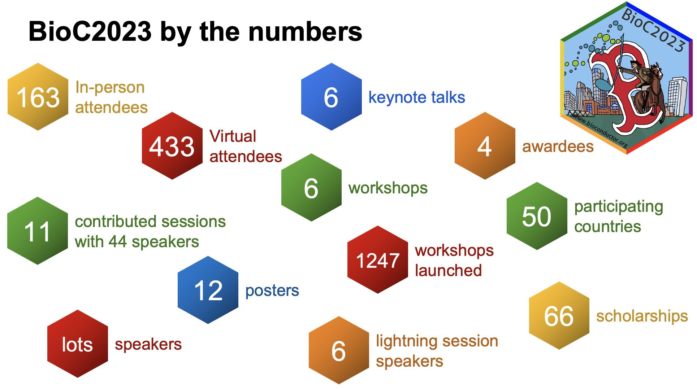
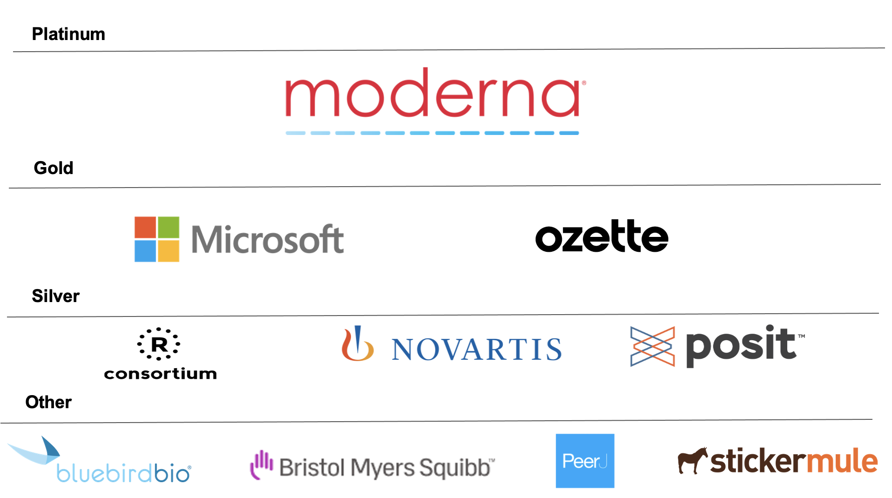

BioC2023 kicked off at the Dana-Farber Cancer Institute in Boston, USA. It was opened by Vincent Carey, Professor of Medicine at Harvard and co-founder of the Bioconductor project. The Annual North America Bioconductor conference gave members of the community an opportunity to highlight current developments with and beyond the Bioconductor community. With 600 participants, it was a scientifically stimulating meeting that offered a great opportunity for networking and collaboration. Over one hundred and fifty people attended the conference in person and more than four hundred people attended the conference virtually, which was an increase of over 150 on last year’s conference, BioC2022. All talks are available on the Bioconductor YouTube channel.
This rich 3-day conference included talks from six esteemed keynote speakers.
- JJ. Allaire, Founder and CEO of Posit:
- Topic: “Reproducible Manuscripts with Quarto” (accompanied by a live demo)
- Heng Li, Associate Professor from Dana-Farber Cancer Institute and Harvard Medical School:
- Beth Cimini, Senior Group Leader at the Broad Institute of MIT and Harvard:
- Jeffrey Moffitt, Assistant Professor at Harvard Medical School and Boston’s Children’s Hospital:
- Samantha Lent, Senior Computational Biologist:
- Nancy Zhang, Professor of Statistics and Data Science at the University of Pennsylvania:
Emerging Topics and Interactive Sessions
Many emerging cutting-edge topics in computational biology and bioinformatics were discussed at BioC2023; including methods for analysis of spatial single cell, multi-modal data integration, microbiome resources, telomere to telomere (T2T) genome, long-read sequencing, splice variant calling and so much more! Community contributors gave twelve short talks selected from submitted abstracts on a wide range of ’omics topics, sixteen package demos took place along with six in-depth interactive workshops. The demos gave shorter thirty to forty-five minute package overviews whilst the workshops were more intense with them being ninety minutes each in duration. All workshop and demo materials are shared on the conference website.
Awards and Acknowledgments
Congratulations to the deserved 2023 Bioconductor awardees. Professor Matt Richie, Professor Susan Holmes, Constantin Ahlmann-Eltze and Simone Bell were the Bioconductor Community Award winners, receiving awards for their outstanding contributions to Bioconductor. They were nominated by community members in the annual call for nominees and voted for by the Bioconductor Community Advisory Board and Technical Advisory Board.
Best poster and presentation awards at BioC2023 were generously sponsored by PeerJ. Winners were selected based on which presentation and poster attendees said they liked most in the BioC2023 feedback survey. Such an award was given to Constantin Ahlmann-Eltze as his poster was deemed the best. His poster was on “Regression on latent spaces for the analysis of multi-condition single-cell RNA-seq Data” Best Presentation was awarded to Jiefei Wang who gave an informative workshop presentation on “High-Performance Computing in R for Genomic Research”. These, together with 3 articles, 59 posters and 53 slides from Bioconductor North America conferences are available on the F1000 Bioconductor Conference channel.
Supporting diversity and inclusion at our meetings is a core value of Bioconductor. The conference committee awarded 14 in-person and 50 virtual scholarships. These ensured that individuals who might not have been able to participate due to financial constraints had the opportunity to attend.
It’s important for us to make Bioconductor resources open, transparent and accessible. Recordings of talks and workshop/demo materials are available on Bioconductor YouTube and the BioC2023 conference website respectively.
BioC2023 are extremely grateful to those that sponsored BioC2023. BioC2023’s platinum sponsor was Moderna, gold sponsors were Microsoft Genomics and Ozette, and silver sponsors were R Consortium, Novartis and Posit. Their support along with BioC2023’s other sponsors was greatly appreciated by the Bioconductor community.

What did attendees like about BioC2023?
“Some of the keynotes were really eye-opening. It was a great opportunity to present some of my work and get feedback from the Bioc community, as well as connect with new people. And to be honest, I really thought the organisers did a fantastic job communicating with attendees & presenters.”
“I loved being able to attend virtually, many online conferences only have specific keynotes and/or no workshops available online. Being able to launch RStudio from Galaxy and use their markdowns was great.”
“I liked that the topics of the talks were very diverse. I also liked the package demonstrations and workshops, they were really useful.”
“I like that I was able to see everyone who I have interacted with in the past couple of years in person. I was able to talk to potential collaborators and do some networking. I am grateful to the organising committee. I liked the spatial transcriptomics track and the keynotes.”
“I thought it went really well, there was a good mixture of types of projects. The cloud platform was easy to use for workshops. The keynotes were interesting.”
“The overall format of the conference, including the keynotes, workshops, and package demo, was inspiring. The food options were amazing. The support for attendees regarding lodging, registration fee, and travel was beneficial.”
Conclusion
Attending BioC2023 not only means being updated with the latest in computational biology and bioinformatics but also expanding your network with like-minded professionals and leading experts. Don’t miss out on the next Bioconductor conference! Stay tuned for updates on BioC2024 and be a part of this incredible community.